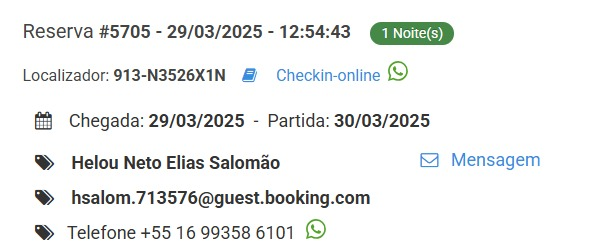

O que fazer ao chegar na pousada
Todos os check-in do dia devem ser anotados em um rascunho.
Neste rascunho deve conter os seguintes dados:
- Nome do hospede
- Número do quarto
- Quantas pessoas estão no quarto
- Qual o horário do check-in
- Se está pago ou não
- Se não estiver pago, colocar o valor no rascunho para ser cobrado no check-in.
Lembre-se de deixar todos os check-in do dia desta forma

Hóspede quer fazer um orçamento
Para que possamos informar com exatidão os valores de nossa hospedagem, por favor informe: * De qual data completa (Check in e horário previsto para chegada)? * Até qual data completa (check out, lembrando que se encerra as 11 da manhã ok)? * Para quantas pessoas? * Há crianças na reserva? Se sim, por gentileza já informe a idade. * Preferência por disposição das camas? Ex.: Casal ou solteiro * E caso tenha alguma especificidade, nos informe, por gentileza.
*Informações Relevantes* Cumprimos rigorosamente os protocolos exigidos pela LGPD. *NÃO SERVIMOS CAFÉ DA MANHÃ* * Nossa pousada disponibiliza *SECADOR & FERO DE PASSAR ROUPA*, apenas uma unidade de cada e são de uso coletivo, retirados e devolvidos junto à recepção. * Prazo de cancelamento e alterações até 72h antes do horário de check in às 14h no dia da primeira estada conosco para obter o direito a reembolso. * *O estacionamento não está incluso no valor da hospedagem.* O que indicamos é coberto e com manobrista é um serviço terceirizado e opcional, com funcionamento 24 horas. Está localizado à menos de 100 metros da pousada: *Rua Apeninos 1070* e, recomendamos que consulte/confirme as regras, os horários e valor da diária direto com o estacionamento. O valor da diária atual é a partir de R$ 30,00 e, o procedimento para obtenção de desconto é: Primeiro estacione o veículo, lá eles entregarão um canhoto o qual aciona o desconto do convênio mediante o carimbar do ticket na recepção da pousada. Para maiores detalhes por gentileza entrar em ctt diretamente pelo whatsapp 11916331875 KPARK ESTACIONAMENTO. * A farmácia mais próxima que temos daqui é a ultrafarma na Rua Apeninos, 1025 a 1 minuto caminhando o whatsapp de atendimento é 11978547780. * Não trabalhamos com arrumação diária* Caso necessite, a mesma deve ser solicitada para o terceiro dia de vossa hospedagem junto à recepção. * Não trabalhamos com adição de cama extra, colchonetes no chão e nem day use. * Amamos os animais, porém não temos estrutura para hospedá-los. * Estamos localizados à 3 minutos caminhando da estação de metrô Paraíso. Caso venha de metrô, observe que: A saída mais conveniente que dá acesso à pousada fica cito à Rua Dr. Eduardo Amaro - *metrô paraíso*. * *Check in é a partir das 14hrs até as 22h* Caso precise chegar em horários diferentes solicite informação sobre. * *Check out é até as 11hrs em ponto*. Caso saia entre 11h01 e 13h30 será cobrado o valor de 50% da diária correspondente a última diária de vossa reserva, após as 13h30 será cobrado o valor de 100% da mesma. Importante colocar que, caso precise deste tempo e já saiba previamente que sairá dentro deste período estendido ou além, favor nos informar para averiguarmos a disponibilidade do serviço adicional, pois muitas vezes, como estamos lotados, não conseguimos a concessão. * Nossa estrutura possuí três andares e não possuí elevador, nem berços. * Não dispomos de serviços de mensageiros, com isso solicitamos que façam a gestão de vossas bagagens. * Lavanderia (whastapp) apenas indicação, para maiores detalhes 11 991236954. * Visitantes *não são permitidos* e caso em qualquer momento seja identificado será cobrado o valor de R$50,00 por pessoa e visita como penalidade. Caso saiba e queira receber alguém orientamos que efetue a reserva para a quantidade exata de pessoas que deseja que entre no quarto e nos avise previamente para inclusão da pessoa como hóspede em vossa reserva, documentos são solicitados para segurança de todos os hospedados em nossa pousada. Ressaltamos ainda que nosso ambiente é familiar e prenuncia o bem-estar e segurança de todos. * Para emissão de nota fiscal se faz necessário o envio do endereço completo do solicitante. Caso seja em nome da empresa favor enviar o espelho do CNPJ. * Vossa hospedagem contempla roupa de cama (incluindo coberta) e banho (toalha) além de amenities (sabonete/sashê banho) * Todos os quartos para família, contém beliche. E caso o ar condicionado de alguma suíte entre em manutenção de forma inesperada, será substituído por ventilador. * Caso efetue algum pedido por IFOOD ou similares por gentileza nos avise pelo whatsapp em nome de quem está e a previsão de chegada, bem como o código para que o entregador possa deixa-lo, assim lhe avisamos pelo whatsapp quando chegar e você poderá retirá-lo em nosso balcão da recepção em seu tempo. Caso precise usar o micro-ondas, o mesmo se encontra em nossa 'cozinheta' que fica no térreo, lado esquerdo no final do corredor. * O valor de cada água disposta no frigobar é R$ 4,00 e cada refrigerante R$ 5,00. Em caso de perda da chave única disponibilizada no período de vossa hospedagem será cobrado o valor de R$ 50,00 para reposição da mesma. * De acordo com as regras internas da Pousada que estão fixadas atrás das portas dos quartos, as tomadas do Ar Condicionado são para uso EXCLUSIVO do Ar Condicionado. Eventuais problemas causados pelo mau uso serão cobrados, portanto solicitamos, a Gentileza, que ao chegar em sua suíte visualize a lâmina de normas de bom convívio que se encontra anexada na parte de dentro da porta principal do quarto. * Atente-se: A tecnologia usada nas fechaduras de nossas portas permite que, uma vez dentro da suíte, para trancá-la, basta apenas encostá-la. Só quem tem a senha eletrônica e/ou a chave física pode abri-la pelo lado de fora ok?! 🤓🤓🤓 . *Informações para utilizar a internet* Conectar em REDE: Pousada Bonita SENHA DO WIFI: LavateriaParaiso (favor considerar as letras L & P MAIUSCULAS ok 🤓 )
📍 *Pousada Bonita e Hotel* 📌 Localização: Rua Correia Dias, 368 Vila Mariana - São Paulo/SP CEP: 04104-001 🚇 Acesso: • 3 min a pé do Metrô Paraíso • Saída mais próxima: Rua Dr. Eduardo Amaro 📲 Google Maps: https://maps.app.goo.gl/vy3DQj66FDYVEhfm9 🚗 Estacionamento mais próximo: Rua Apeninos, 1070 (100m da pousada) ⭐ Pontos de referência: • Estação Paraíso do Metrô • Hospital Santa Cruz • Rua Vergueiro
Cliente forneceu todos os dados necessários,
siga com o orçamento
fazer o orçamento da reserva e enviar o recorte desta maneira:
Lembre-se de apagar o número do quarto.

Enviar esta mensagem Junto com o recorte
Lembre-se de alterar a data para a data vigente.
( dia em que se está fazendo o orçamento)
Nosso orçamento é apenas informativo e não está sendo efetuada a reserva ao apresentá-lo. Ressaltamos ainda que o valor é válido até 20/03/2025 às 21h20 de acordo a disponibilidade ok 🤓
Para reservar, informe por gentileza: * Nome completo de todos os hospedes; * CPF de todos os hospedes; * Data de nascimento de todos os hospedes; * E-mail (apenas do solicitante). * Whastapp de todos os hóspedes; * Horário previsto para vossa chegada.
*FORMAS DE PAGAMENTO* Não trabalhamos com link de pagamento, tão pouco dividimos valores em cartão de crédito e não faturamos para empresas CHAVE PIX: CNPJ: 14.313.731/0001-00 DADOS BANCÁRIOS: Banco Santander - nº 033 Agência 4790 - São Paulo Conta corrente - 130036661 Favorecido: Pousada Bonita Ltda. ME CNPJ: 14.313.731/0001-00 Como garantia da sua reserva solicitamos o pagamento antecipado em 100% irrevogavelmente, após a transferência por gentileza enviar o comprovante à este canal Atenção! 🚨🚨 Precisa ser informado com no mínimo 72h antes de seu check in Caso queira alterar ou cancelar com direito ao reembolso total. Combinado?! Após o envio do comprovante bancário. Encaminharemos o mesmo para o departamento administrativo que confirmará o recebimento dentro do horário comercial. Tão logo nos sinalizem, confirmaremos a reserva através deste canal 🤓🤓 Gratos pela compreensão
Assim que cliente enviar TODOS os dados, fazer a reserva e enviar o recorte desta maneira:
Exemplo de reserva feita aguardando pagamento

Logo abaixo da reserva já feita, enviar esta mensagem junto
com o recorte sem hesitar
*BLOQUEIO DE RESERVA* AGUARDANDO ATÉ AS 21h00 DE 21/03/25 *Antes de efetuar o pagamento atente-se para as informações referentes à vossa reserva* *Visitantes caso entrem no quarto será cobrado o valor de R$ 50,00 por pessoa e visita. *Solicitamos que ao chegar em sua suíte visualize a lâmina de normas de bom convívio que se encontra anexada na parte de dentro da porta principal do quarto 🤓🤓🤓🤓 *Check in após as 14h até as 22h (onde a nossa recepção encerra as atividades) *Check out até as 11h *NÃO SERVIMOS CAFÉ DA MANHÃ* Prazo de cancelamento e alterações *até 72h* antes do horário de check in às 14h no dia da primeira estada conosco para obter o direito a reembolso O estacionamento que indicamos é coberto e com manobrista é um serviço terceirizado e opcional, com funcionamento 24 horas. Está localizado á menos de 100 metros da pousada: Rua Apeninos 1070, recomendamos que consulte as regras, os horários e valor da diária direto com o estacionamento. O valor da diária atual é a partir de R$ 30,00, mediante carimbar o ticket na recepção da pousada. Para maiores detalhes por gentileza entrar em ctt diretamente pelo whatsapp 11916331875 KPARK ESTACIONAMENTO CHAVE PIX: CNPJ: 14.313.731/0001-00 DADOS BANCÁRIOS: Banco Santander - nº 033 Agência 4790 - São Paulo Conta corrente - 130036661 Favorecido: Pousada Bonita Ltda. ME CNPJ: 14.313.731/0001-00 *Como garantia da sua reserva solicitamos o pagamento antecipado em 100% irrevogavelmente*, após a transferência por gentileza enviar o comprovante à este canal Atenção! 🚨🚨 *Não trabalhamos com Link de pagamento* Precisa ser informado com no mínimo 72h antes de seu check in Caso queira alterar ou cancelar com direito ao reembolso total. Combinado?! Após o envio do comprovante bancário. Encaminharemos o mesmo para o departamento administrativo que confirmará o recebimento dentro do horário comercial. Tão logo nos sinalizem, confirmaremos a reserva através deste canal 🤓🤓 Gratos pela compreensão
Cliente enviou o comprovante de pagamento, enviar o comprovante no grupo de whatsapp do Bonita com a seguinte frase:
Lembre-se de trocar o número da reserva.
Confirma por gentileza 🤓🙏🏻 Reserva #5625
enviar esta mensagem para o hóspede assim que ele enviar o comprovante de pagamento
Agradecemos pelo envio do comprovante bancário. Já encaminhamos o mesmo para o departamento administrativo que confirmará o recebimento dentro do horário comercial. Tão logo nos sinalizem, confirmaremos a reserva através deste canal 🤓🤓 Gratos pela compreensão.
Hóspede chegou na pousada para o check-in
Passos a serem seguidos quando o hóspede chegar na pousada
Assim que finalizar o check-in seguir estes passos Hóspede
No próprio whastapp da pousada escreva seja bem vindo, vai aparecer alguma conversa já com o regulamento, é só encaminhar para o hóspede
 >
>
Mensagens a serem enviadas
Lembre-se de trocar o número da senha, colocando a senha do quarto do hóspede
*Informações Relevantes* Cumprimos rigorosamente os protocolos exigidos pela LGPD. *NÃO SERVIMOS CAFÉ DA MANHÃ* * Prazo de cancelamento e alterações até 72h antes do horário de check in às 14h no dia da primeira estada conosco para obter o direito a reembolso. * *O estacionamento não está incluso no valor da hospedagem.* O que indicamos é coberto e com manobrista é um serviço terceirizado e opcional, com funcionamento 24 horas. Está localizado a menos de 100 metros da pousada: Rua Apeninos 1070 e, recomendamos que consulte/confira as regras, os horários e o valor da diária direto com o estacionamento. O valor da diária atual é a partir de R$30,00 e, o procedimento para obtenção de desconto é: Primeiro estacione o veículo, lá eles entregarão um canhoto o qual aciona o desconto do convênio mediante o carimbar do ticket na recepção da pousada. Para maiores detalhes por gentileza entrar em ctt diretamente pelo whatsapp 11916331875 KPARK ESTACIONAMENTO. * A farmácia mais próxima que temos daqui é a ultrafarma na Rua Apeninos, 1025 a 1 minuto caminhando o whatsapp de atendimento é 11978547780. * Não trabalhamos com arrumação diária* Caso necessite, a mesma deve ser solicitada para o terceiro dia de vossa hospedagem junto à recepção. * Não trabalhamos com adição de cama extra, colchonetes no chão e nem day use. * Amamos os animais, porém não temos estrutura para hospedá-los. * Estamos localizados a 3 minutos caminhando da estação de metrô Paraíso. Caso venha de metrô, observe que: A saída mais conveniente que dá acesso à pousada fica sito à Rua Dr. Eduardo Amaro - metrô paraíso. * Check in é a partir das 14hrs até as 22h Caso precise chegar em horários diferentes solicite informação sobre. * Nossa estrutura possui três andares e não possui elevador, nem berços. * Não dispomos de serviços de mensageiros, com isso solicitamos que façam a gestão de vossas bagagens. * Lavanderia (whastapp) apenas indicação, para maiores detalhes 11 991236954. * Visitantes não são permitidos e caso em qualquer momento seja identificado será cobrado o valor de R$50,00 por pessoa e visita como penalidade. Caso saiba e queira receber alguém orientamos que efetue a reserva para a quantidade exata de pessoas que deseja que entre no quarto e nos avise previamente para inclusão da pessoa como hóspede em vossa reserva, documentos são solicitados para segurança de todos os hospedados em nossa pousada. Ressaltamos ainda que nosso ambiente é familiar e prenuncia o bem-estar e segurança de todos. * Para emissão de nota fiscal se faz necessário o envio do endereço completo do solicitante. Caso seja em nome da empresa favor enviar o espelho do CNPJ. * Vossa hospedagem contempla roupa de cama (incluindo coberta) e banho (toalha) além de amenities (sabonete/sashê banho) * Todos os quartos para família, contém beliche. E caso o ar condicionado de alguma suíte entre em manutenção de forma inesperada, será substituído por ventilador. * Caso efetue algum pedido por IFOOD ou similares por gentileza nos avise pelo whatsapp em nome de quem está e a previsão de chegada, bem como o código para que o entregador possa deixa-lo, assim lhe avisamos pelo whatsapp quando chegar e você poderá retirá-lo em nosso balcão da recepção em seu tempo. Caso precise usar o micro-ondas, o mesmo se encontra em nossa 'cozinheta' que fica no térreo, lado esquerdo no final do corredor. * O valor de cada água disposta no frigobar é R$ 4,00 e cada refrigerante R$ 5,00. Em caso de perda da chave única disponibilizada no período de vossa hospedagem será cobrado o valor de R$ 50,00 para reposição da mesma. * De acordo com as regras internas da Pousada que estão fixadas atrás das portas dos quartos, as tomadas do Ar Condicionado são para uso EXCLUSIVO do Ar Condicionado. Eventuais problemas causados pelo mau uso serão cobrados, portanto solicitamos, a Gentileza, que ao chegar em sua suíte visualize a lâmina de normas de bom convívio que se encontra anexada na parte de dentro da porta principal do quarto. * Atente-se: A tecnologia usada nas fechaduras de nossas portas permite que, uma vez dentro da suíte, para trancá-la, basta apenas encostá-la. Só quem tem a senha eletrônica e/ou a chave física pode abri-la pelo lado de fora ok?! 🤓🤓🤓🤓. Informações para utilizar a internet Conectar em REDE: Pousada Bonita * Lavanderia (whastapp) apenas indicação, para maiores detalhes 11 991236954. * Visitantes não são permitidos e caso em qualquer momento seja identificado será cobrado o valor de R$50,00 por pessoa e visita como penalidade. Caso saiba e queira receber alguém orientamos que efetue a reserva para a quantidade exata de pessoas que deseja que entre no quarto e nos avise previamente para inclusão da pessoa como hóspede em vossa reserva, documentos são solicitados para segurança de todos os hospedados em nossa pousada. Ressaltamos ainda que nosso ambiente é familiar e prenuncia o bem-estar e segurança de todos. * Para emissão de nota fiscal se faz necessário o envio do endereço completo do solicitante. Caso seja em nome da empresa favor enviar o espelho do CNPJ. * Vossa hospedagem contempla roupa de cama (incluindo coberta) e banho (toalha) além de amenities (sabonete/sashê banho) * Todos os quartos para família, contém beliche. E caso o ar condicionado de alguma suíte entre em manutenção de forma inesperada, será substituído por ventilador. * Caso efetue algum pedido por IFOOD ou similares por gentileza nos avise pelo whatsapp em nome de quem está e a previsão de chegada, bem como o código para que o entregador possa deixa-lo, assim lhe avisamos pelo whatsapp quando chegar e você poderá retirá-lo em nosso balcão da recepção em seu tempo. Caso precise usar o micro-ondas, o mesmo se encontra em nossa 'cozinheta' que fica no térreo, lado esquerdo no final do corredor. * O valor de cada água disposta no frigobar é R$ 4,00 e cada refrigerante R$ 5,00. Em caso de perda da chave única disponibilizada no período de vossa hospedagem será cobrado o valor de R$ 50,00 para reposição da mesma. * De acordo com as regras internas da Pousada que estão fixadas atrás das portas dos quartos, as tomadas do Ar Condicionado são para uso EXCLUSIVO do Ar Condicionado. Eventuais problemas causados pelo mau uso serão cobrados, portanto solicitamos, a Gentileza, que ao chegar em sua suíte visualize a lâmina de normas de bom convívio que se encontra anexada na parte de dentro da porta principal do quarto. * Atente-se: A tecnologia usada nas fechaduras de nossas portas permite que, uma vez dentro da suíte, para trancá-la, basta apenas encostá-la. Só quem tem a senha eletrônica e/ou a chave física pode abri-la pelo lado de fora ok?! 🤓🤓🤓🤓. Informações para utilizar a internet Conectar em REDE: Pousada Bonita SENHA DO WIFI: LavateriaParaiso (favor considerar as letras L & P MAIUSCULAS ok 🤓🤓)
Sujestões de delivery para o jantar de hoje: O atendimento deles se inicia a partir das 18h... Vou te mandar do *Santino*, eu comi a pizza de 4 queijos deles é de comer rezando 11969726758 mas lá também tem lanches e outras opções de refeições ❤ Real Pizza, eu ainda não comi, mas tem um preço bastante competitivo e pela região no panfleto para que está perto da gente, o que em teoria faria com que o pedido chegue mais rápido 11986744900 e/ou 11913760668. pizzaria *Gonçalves*, eu nunca comi nada deles, mas dizem que é bom tb 11946125637 Lê Fenix - beirutes - porções e massas 11946125637, esse é novo, ainda também não provei. papito eu já comi, de verdade não é minha predileta, mas é uma opção econômica também e até que ok na real 11959711430 🤑🤑 são esses que temos aqui no balcão, espero ter ajudado 🤓 se fizer pedido por algum deles me avisa, que mando mensagem pra dar uma apertadinha neles, assim eles enviam mais rápido hehe 😝😝 #AgenteEsperaNéRs
por precaução, caso necessite pode utilizar também a senha para abrir a porta da frente e de vossa suíte 211567#
Confirmando reservas
O recorte fica desta maneira
Confirmando reservas
Boa tarde, eu escrevo com... e o nome da pessoa
espera a pessoa responder, manda o recorte da reserva e manda a seguinte frase
Perfeito! Qual horário previsto da vossa chegada, por gentileza.
ele respondendo, vc vai enviar as mensagens abaixo
*Informações Relevantes* Cumprimos rigorosamente os protocolos exigidos pela LGPD. *NÃO SERVIMOS CAFÉ DA MANHÃ* * Prazo de cancelamento e alterações até 72h antes do horário de check in às 14h no dia da primeira estada conosco para obter o direito a reembolso. * *O estacionamento não está incluso no valor da hospedagem.* O que indicamos é coberto e com manobrista é um serviço terceirizado e opcional, com funcionamento 24 horas. Está localizado a menos de 100 metros da pousada: Rua Apeninos 1070 e, recomendamos que consulte/confira as regras, os horários e o valor da diária direto com o estacionamento. O valor da diária atual é a partir de R$30,00 e, o procedimento para obtenção de desconto é: Primeiro estacione o veículo, lá eles entregarão um canhoto o qual aciona o desconto do convênio mediante o carimbar do ticket na recepção da pousada. Para maiores detalhes por gentileza entrar em ctt diretamente pelo whatsapp 11916331875 KPARK ESTACIONAMENTO. * A farmácia mais próxima que temos daqui é a ultrafarma na Rua Apeninos, 1025 a 1 minuto caminhando o whatsapp de atendimento é 11978547780. * Não trabalhamos com arrumação diária* Caso necessite, a mesma deve ser solicitada para o terceiro dia de vossa hospedagem junto à recepção. * Não trabalhamos com adição de cama extra, colchonetes no chão e nem day use. * Amamos os animais, porém não temos estrutura para hospedá-los. * Estamos localizados a 3 minutos caminhando da estação de metrô Paraíso. Caso venha de metrô, observe que: A saída mais conveniente que dá acesso à pousada fica sito à Rua Dr. Eduardo Amaro - metrô paraíso. * Check in é a partir das 14hrs até as 22h Caso precise chegar em horários diferentes solicite informação sobre. * Check out é até as 11 horas em ponto. Caso saia entre 11h01 e 14h00 será cobrado o valor de 50% da diária correspondente a última diária de vossa reserva, após as 14h será cobrado o valor de 100% da mesma. Importante colocar que, caso precise deste tempo e já saiba previamente que sairá dentro deste período estendido ou além, favor nos informar para averiguarmos a disponibilidade do serviço adicional, pois muitas vezes, como estamos lotados, não conseguimos a concessão. * Nossa estrutura possui três andares e não possui elevador, nem berços. * Não dispomos de serviços de mensageiros, com isso solicitamos que façam a gestão de vossas bagagens. * Lavanderia (whastapp) apenas indicação, para maiores detalhes 11 991236954. * Visitantes não são permitidos e caso em qualquer momento seja identificado será cobrado o valor de R$50,00 por pessoa e visita como penalidade. Caso saiba e queira receber alguém orientamos que efetue a reserva para a quantidade exata de pessoas que deseja que entre no quarto e nos avise previamente para inclusão da pessoa como hóspede em vossa reserva, documentos são solicitados para segurança de todos os hospedados em nossa pousada. Ressaltamos ainda que nosso ambiente é familiar e prenuncia o bem-estar e segurança de todos. * Para emissão de nota fiscal se faz necessário o envio do endereço completo do solicitante. Caso seja em nome da empresa favor enviar o espelho do CNPJ. * Vossa hospedagem contempla roupa de cama (incluindo coberta) e banho (toalha) além de amenities (sabonete/sashê banho) * Todos os quartos para família, contém beliche. E caso o ar condicionado de alguma suíte entre em manutenção de forma inesperada, será substituído por ventilador. * Caso efetue algum pedido por IFOOD ou similares por gentileza nos avise pelo whatsapp em nome de quem está e a previsão de chegada, bem como o código para que o entregador possa deixa-lo, assim lhe avisamos pelo whatsapp quando chegar e você poderá retirá-lo em nosso balcão da recepção em seu tempo. Caso precise usar o micro-ondas, o mesmo se encontra em nossa 'cozinheta' que fica no térreo, lado esquerdo no final do corredor. * O valor de cada água disposta no frigobar é R$ 4,00 e cada refrigerante R$ 5,00. Em caso de perda da chave única disponibilizada no período de vossa hospedagem será cobrado o valor de R$ 50,00 para reposição da mesma. * De acordo com as regras internas da Pousada que estão fixadas atrás das portas dos quartos, as tomadas do Ar Condicionado são para uso EXCLUSIVO do Ar Condicionado. Eventuais problemas causados pelo mau uso serão cobrados, portanto solicitamos, a Gentileza, que ao chegar em sua suíte visualize a lâmina de normas de bom convívio que se encontra anexada na parte de dentro da porta principal do quarto. * Atente-se: A tecnologia usada nas fechaduras de nossas portas permite que, uma vez dentro da suíte, para trancá-la, basta apenas encostá-la. Só quem tem a senha eletrônica e/ou a chave física pode abri-la pelo lado de fora ok?! 🤓🤓🤓🤓. Informações para utilizar a internet Conectar em REDE: Pousada Bonita SENHA DO WIFI: LavateriaParaiso (favor considerar as letras L & P MAIUSCULAS ok 🤓🤓)
Importante informar que nosso sistema não identifica ou armazena vossos dados automaticamente, portanto solicitamos os dados de acordo com a LGPD. Para que eu adiante os processos de vosso check in, informe por gentileza: * Nome completo de todos os hospedes; * CPF de todos os hospedes; * Data de nascimento de todos os hospedes; * E-mail (apenas do solicitante). * Whastapp de todos os hóspedes; Gratos pela compreensão.
Assim que o hóspede enviar as informações acima, entrarem contato com Téo ou com A Karen para poder juntos faazer a cobrança da reserva do hóspede
assim que realizar a cobrança enviar a seguinte mensagem para o hóspede
Confirmamos o pagamento e a reserva. 🤓🙏Gratidão por nos escolher.
Cabe também salientar que nossa recepção encerra as atividades as 22h e caso perceba em algum momento que não chegará antes desse horário nos informe por gentileza, assim verificaremos a disponibilidade do serviço adicional de Late Check in.
📍 *Pousada Bonita e Hotel* 📌 Localização: Rua Correia Dias, 368 Vila Mariana - São Paulo/SP CEP: 04104-001 🚇 Acesso: • 3 min a pé do Metrô Paraíso • Saída mais próxima: Rua Dr. Eduardo Amaro 📲 Google Maps: https://maps.app.goo.gl/vy3DQj66FDYVEhfm9 🚗 Estacionamento mais próximo: Rua Apeninos, 1070 (100m da pousada) ⭐ Pontos de referência: • Estação Paraíso do Metrô • Hospital Santa Cruz • Rua Vergueiro
Caso não consiga efetuar a cobrança no cartão do cliente, enviar a seguinte mensagem
Boa noite, Informamos que referente a solicitação de hospedagem via Booking, houve uma inconsistência no processo de pagamento. Orientamos que entre em contato diretamente com a plataforma para substituir os dados de pagamento por outro cartão ou ainda oferecemos a opção pix para que seja *garantida* vossa reserva e possamos dar prosseguimento com vossa hospedagem conosco 🤓🤓🤓 O que prefere: 1- Modificar os dados do cartão de crédito via booking? (caso opte por essa, nos informe após efetuar a modificação por gentileza). 2- Os dados pix para efetuação do pagamento? Gratos por vossa atenção e compreensão 😊😊
quando cliente fizera reserva via whatsapp e quer que envie dados via email, Enviar a seguinte mensagem
(Late check-in)
hóspede vai chegar depois das 22:00, enviar a seguinte mensagem
IMPORTANTE
A opção (A) é somente com autorização do Téo ou quando ele estiver na pousada,
neste caso, só será é enviado a opção de entrada com sem sem plantonista (B)
Cabe salientar que nossa recepção encerra as atividades as 22h e retorna as 7h da manhã do dia seguinte, portanto diante do comunicado da chegada prevista dentro da grade de não funcionamento convencional de nossa recepção, temos: A - Late check in / A ativação do serviço adicional para ter um plantonista para vossa recepção (valor do serviço 30,00). B - Check in by your self / Passamos as coordenadas para que seja possível a entrada na pousada e no quarto com base em senha eletrônica sem plantonista (ação sem custo adicional).